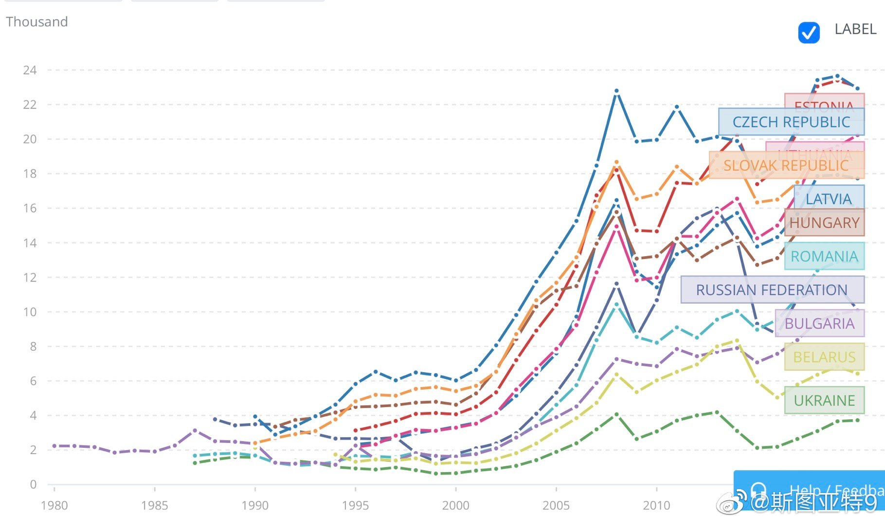
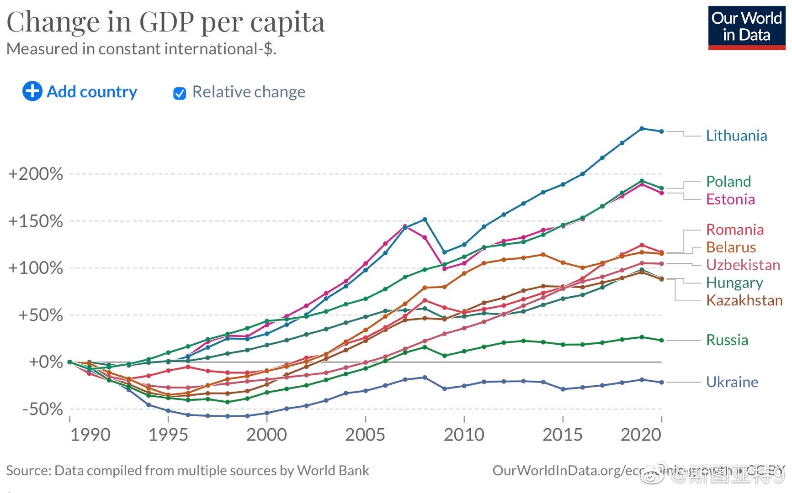
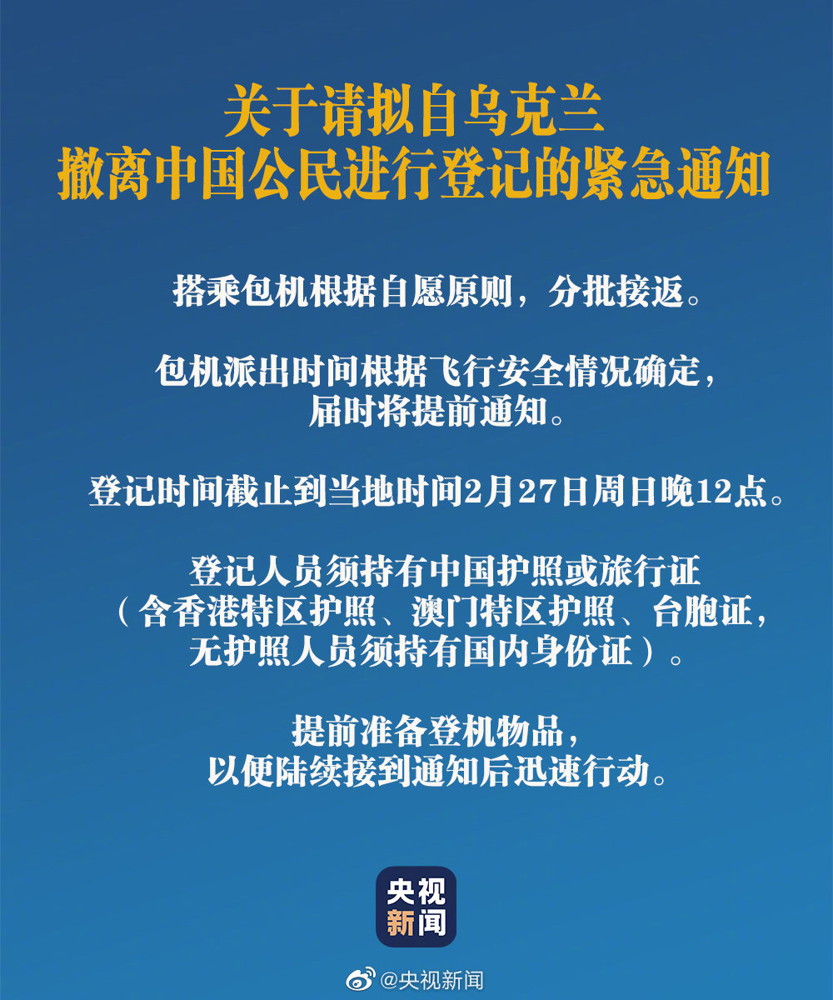

一些苏东国家的人均GDP。乌克兰明显是最穷的，其次是白俄罗斯。乌克兰还是唯一一个人均GDP不到1990年的。为什么乌克兰经济表现这么差估计有很多因素。乌克兰无法像西边的邻居们一样投入北约/欧盟的怀抱提供稳定的国际环境肯定是一个因素，乌克兰无法摆脱寡头经济和腐败肯定也是一个。还有人说乌克兰本来在苏联靠工业的，解体后就比那些靠资源和农业的国家更困难，说的也很有道理。
我不懂。乌克兰不是已经关闭领空了吗？这是要包俄罗斯军机还是怎么着？@央视新闻:【扩散周知！#我驻乌使馆准备分批包机接返中国公民#】今天，#我驻乌使馆发布中国公民登记撤离通知#：当前，乌克兰国内局势急剧恶化，我在乌公民和中资企业处于较高安全风险。为准备分批包机接返有关事宜，现开始人员登记。搭乘包机根据自愿原则。包机派出时间根据飞行安全情况确定，届时将提前通知。登记时间截止到当地时间2月27日周日晚12点，登记人员须持有中国护照或旅行证（含香港特区护照、澳门特区护照、台胞证，无护照人员须持有国内身份证）。后续安排请第一时间关注使馆发布的通知。关于请拟自乌克兰撤离中国公民进行登记的紧急通知